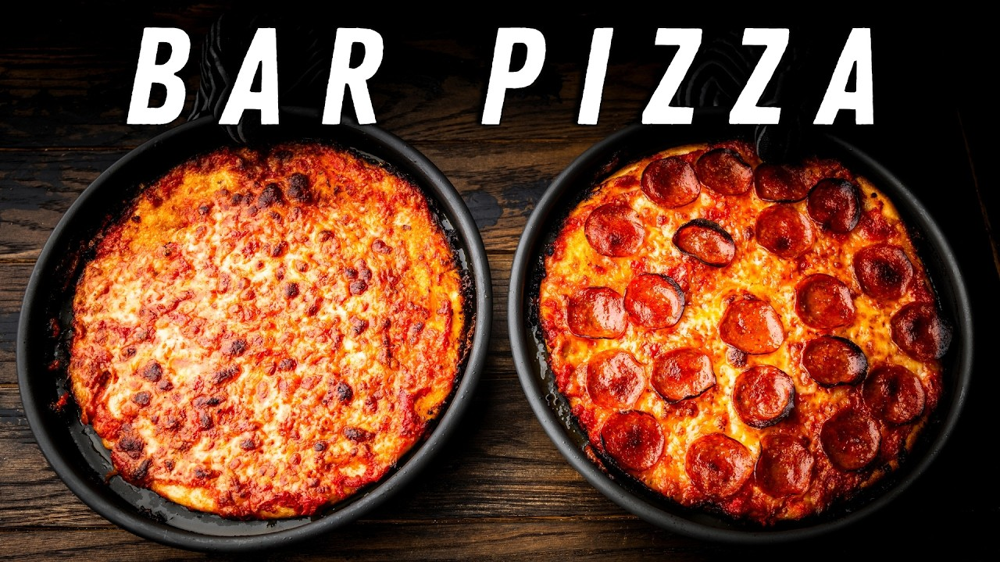

New England bar pizza from Sip and Feast — thin, crisp, cheese-to-the-edge, baked in a buttered-and-oiled pan. The dough wants an overnight in the fridge; everything else is easy.
Mix the flour, yeast, salt, and sugar. Work in the cold water to a rough mass, then the olive oil. Knead 5–7 minutes — if it's sticky, rest it 20–30 minutes and come back.
Divide into 2 balls, seams pinched, seam-side down in oiled bowls. Cover and refrigerate 12–48 hours (24 is the sweet spot). In a rush: 90–120 minutes at room temp — but the flavor lives in the cold ferment.
Pull the dough 2 hours before baking. Oven to 500°F, one rack at the very bottom, one at second-from-top. Drain the tomatoes 3–4 minutes and season with salt.
Slick each 10-inch pan (bar pizza pan or a dark cake pan) with 1½ tbsp each of corn oil and melted butter — sides too. That's the fried, crispy edge.
Press each dough ball to the edges of its pan. If it springs back, cover and give it 20 minutes. Dimple all over with a fork to stop bubbles.
Sauce all the way to the edge, oregano, then the mixed mozzarella and cheddar edge-to-edge. Pepperoni if you're doing it right.
Bake 8 minutes on the bottom rack, then peek under with a spatula: golden and crisp means move it to the top rack for 5–8 more minutes until browned; pale means more time down low.
Cut in small squares, bar style. Shred your own cheese — the pre-shredded stuff has anti-caking starch that burns.